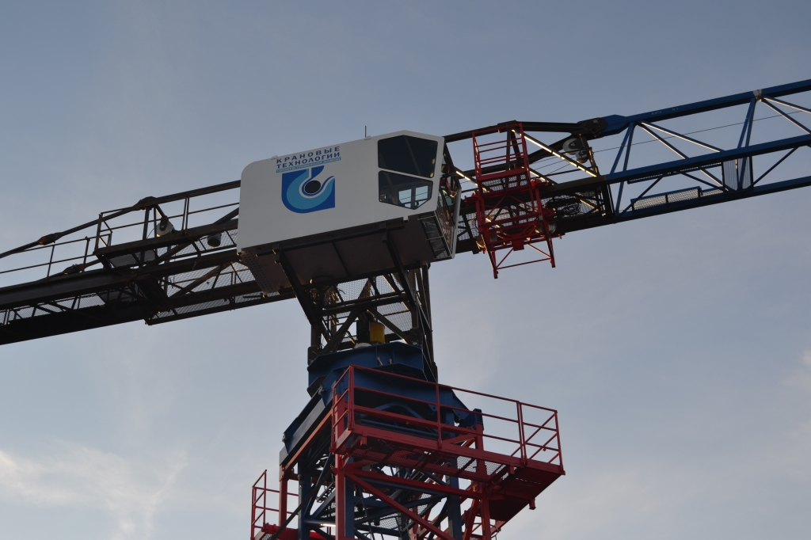
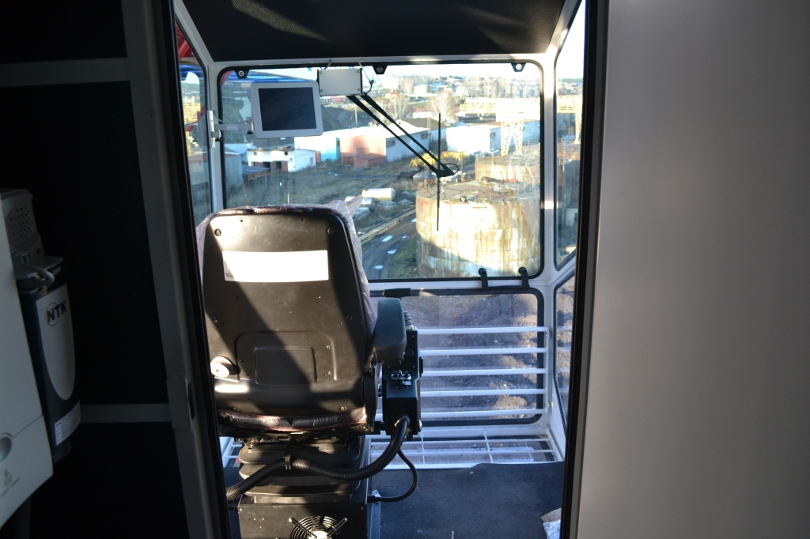
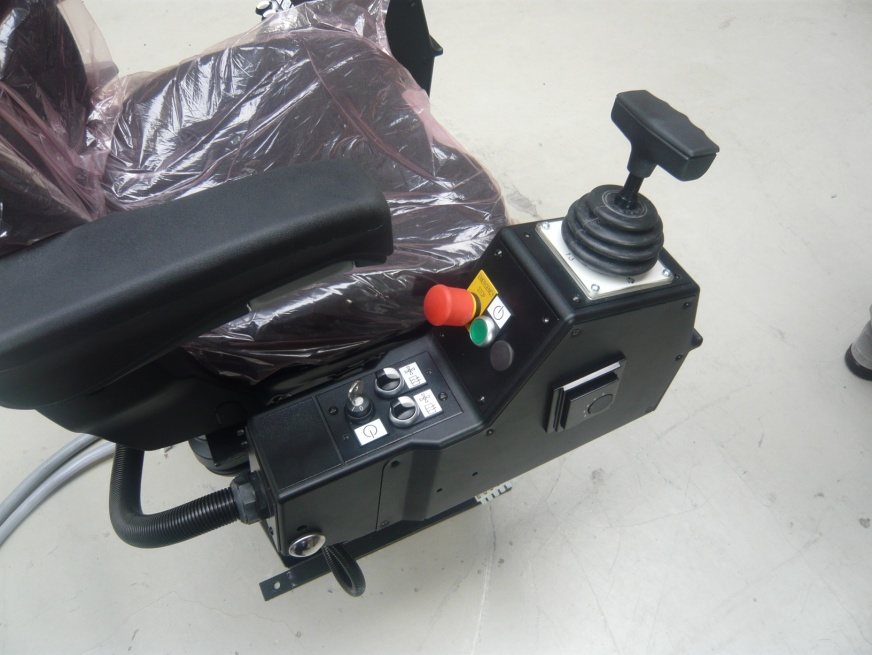
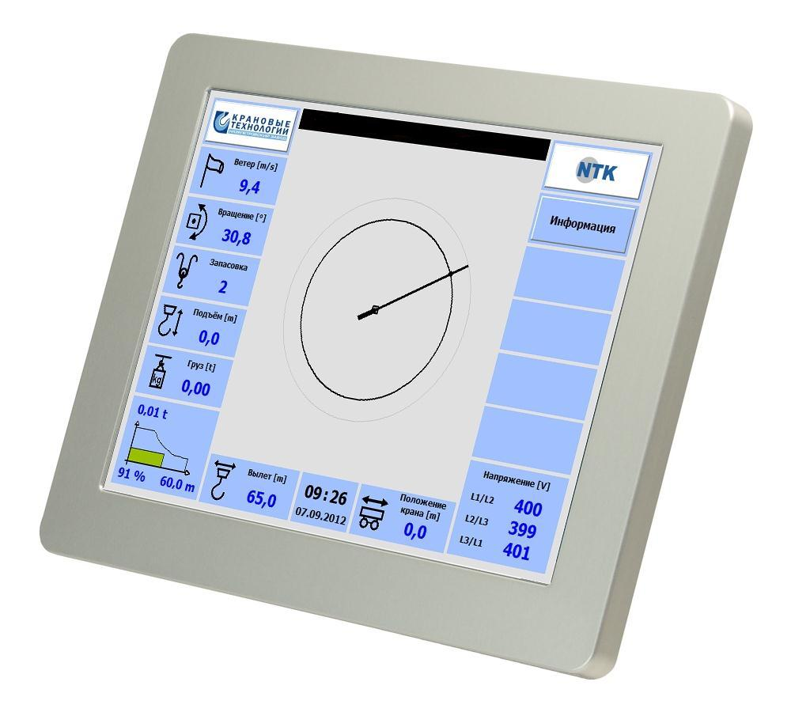

КАТАЛОГ ТЕХНИКИ
Башенный кран TDK-10.215 NTK |
|
   
Безоголовочный башенный кран оснащен передовыми технологиями, с новой кабиной , прибором безопасности и частотным преобразователем. Используются только комплектующие ведущих мировых производителей, которые отличаются функциональностью и надежностью. В конструкции TDK-10.215 применяется система частотного регулирования с заданием программы от контроллера АВВ последнего поколения и специального исполнения (в отличие от систем управления первого поколения). Это позволяет увеличить максимальные скорости подъема грузов, перемещения и поворота стрелы. Данная характеристика систем управления частотным приводом существенно увеличивает отказоустойчивость всех механизмов башенного крана, а так же позволяет увеличивать точность и скорость позиционирования грузов, что соответственно увеличивает скорость строительства.
Преимущества: 1. Кран оснащен новым прибором безопасности, полностью сертифицированным для эксплуатации в России, по своим характеристикам и надежности превосходит аналоги таких производителей, как Liebherr и Potain. Опционально прибор дополняется системой противостолкновения с аналогичным краном на строительном объекте. 2. Специальная, запатентованная логика работы механизма поворота, позволяет существенно увеличить управляемость и точность позиционирования стрелы башенного крана TDK-10.215 при малых перемещениях, при любой знакопеременной ветровой нагрузке (стрелу "не сносит" ветром при ее повороте). 3. Увеличенная динамика торможения на высоких скоростях поворота при сохранении управляемости крана, уникальный режим механизма поворота - имитация "торможения противовключением". 4. Применение на башенном кране TDK-10.215 специальных электродвигателей LEROY SOMER (Франция), Besozzi (Италия) - ведущих мировых производителей , позволяет наилучшим образом реализовывать высокое качество нашей системы управления частотным приводом. 5. Рабочее место оборудовано эргономичным креслом Spohn+Burghard с удобными джойстиками и множеством регулировок. 6. Контроллеры АВВ и запатентованное программное обеспечение позволили внедрить комплексную систему самодиагностики крана, что упрощает установление поломки любой сложности в кратчайшие сроки. Контроллер крана связан через GPRS-интернет с сервисным центром. 7. На кране TDK 10.215 используются комплексные разъемы Harting (Германия), что в 2-3 раза сокращает сроки монтажа электрооборудования крана. Вся кабельная проводка прокладывается с дополнительной механической защитой в специальные кабель-каналы. 8. Полностью русифицированный интерфейс, техническая документация крана TDK-10.215 NTK. 9. На кране применена система монокабины, что означает совмещение кабины машиниста и электрических шкафов, которое позволяет экономичнее использовать микроклимат и доступ к электрическим схемам и электроники.
|